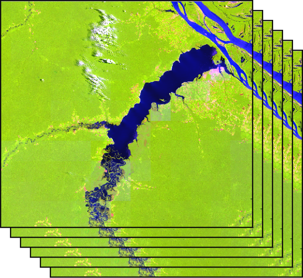
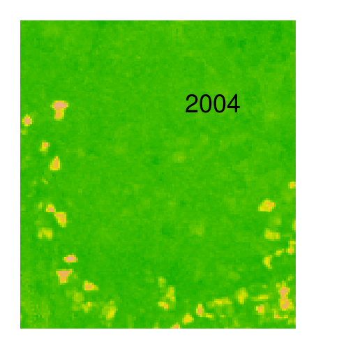
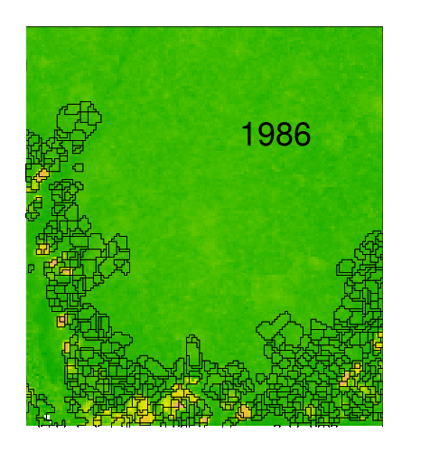
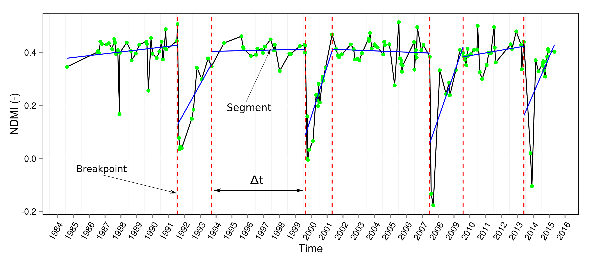
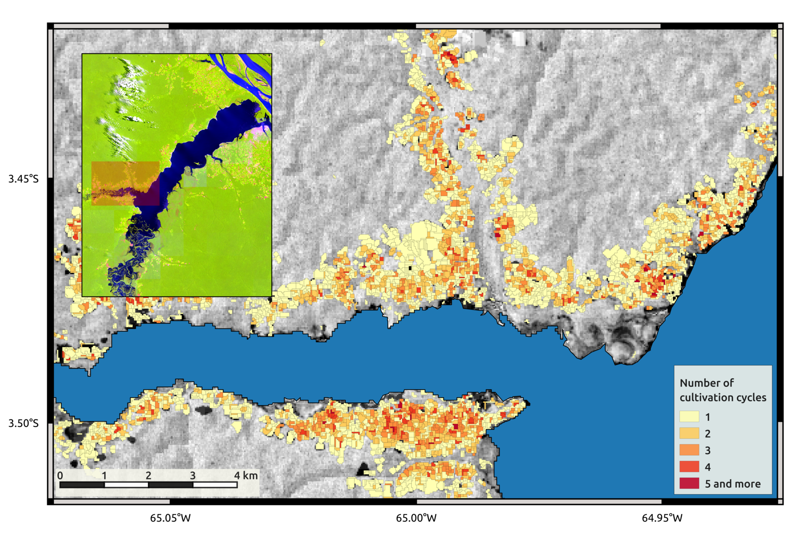
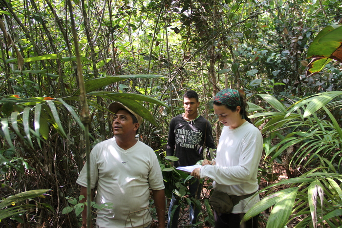

Reconstructing Land Use History from Landsat Time-Series
Case study of Swidden Agriculture Intensification in Brazil
Loïc Dutrieux, 2015-12-18
AGU fall meeting, San-Francisco
Catarina Jakovac, Latifah Siti, Lammert Kooistra
Wageningen University, The Netherlands
Background - how did it start?
Hey Loïc, I found out land use intensity affects forest resilience (Jakovac et al. 2015). But I only have a few observations. Any way we could map land use intensity with remote sensing?
We should definitely try that
Study area and ecological relevance

- Swidden cultivation Area
- 2 years < rotation < 7 years
- Fields used more intensively suffer from slower forest recovery after abandonment
Jakovac, Catarina C., et al. "Loss of secondary‐forest resilience by land‐use intensification in the Amazon." Journal of Ecology 103.1 (2015): 67-77.
Method
- Landsat time-series data
- Spatio-temporal segmentation
- Breakpoints detection
- Breakpoints classification
Landsat data
- All images available (350)
- NDMI time-series (1984-2015)
- $NDMI=\frac{NIR - SWIR}{NIR + SWIR}$
- Clouds and shadows masked with Fmask algorithm
We worked at field level
Spatio-temporal segmentation
- But there is no cadastre !
We worked at field level
Spatio-temporal segmentation

- But there is no cadastre !
- And fields keep moving !
We worked at field level
Spatio-temporal segmentation
- But there is no cadastre !
- And fields keep moving !
- Delineates area of homogeneous temporal behavior
- Implemented in Orfeo-Toolbox (OTB)
Spatio-temporal segmentation
Breakpoints detection (1)
We divided time-series in segments separated by breakpoints

$ y_t=\color{yellow}{\alpha_1} + \color{blue}{\alpha_2} t + \sum_{j=1}^{k} \color{green}{\gamma_j} \sin(\frac{2\pi jt}{f} + \delta_j) + \epsilon_t $
Bai, J., & Perron, P. (1998). Estimating and testing linear models with multiple structural changes. Econometrica, 47-78.
Zeileis, A., Kleiber, C., Krämer, W., & Hornik, K. (2003). Testing and dating of structural changes in practice. Computational Statistics & Data Analysis, 44(1), 109-123.
Verbesselt, J., Hyndman, R., Newnham, G., & Culvenor, D. (2010). Detecting trend and seasonal changes in satellite image time series. Remote sensing of Environment, 114(1), 106-115.
Breakpoints detection (2)
We divided time-series in segments separated by breakpoints
- Segments correspond to stable land use regimes
- Breakpoints correspond to shifts in land use regime
- Stable forest to agriculture (Burning)
- Agriculture to regrowing forest (Abandonment)
- Regrowing forest to stable forest (Stabilization)
Profiles characterization by classification of breakpoints
From segmented time-series to land use intensityWe classified the breakpoints 
- Visual interpretation of ~700 breakpoints
- Training of random forest classifier based on characteristics of surrounding segments
- Number of burning events equal to number of cultivation cycles
And everything is free and open source
Results
Spatial patterns of Land Use intensity
Number of cultivation cycles Validation (1)
How well are we quantifying land use intensity?-

- Validation against independent dataset
- Number of past cultivation cycles retrieved from farmer's interviews
Validation (2)
Sources of deviation
- Missed breakpoints due to fast dynamics
- Missed breakpoints due to low data density
- Unclear temporal patterns due to sub-object mixture of several temporal signatures
Wrapping up - Conclusions
- We can retrieve land use trajectories from Landsat time-series
- Variables relevant for ecologists can be derived from remote sensing
- It is challenging to capture fast dynamics
- There's a lot more to mine out of segmented time-series
- Future works should attempt to fully characterize temporal profiles
- We can do a lot with free and open source software !
- Collaboration is great !
Publications
Dutrieux, L.P., Jakovac, C.C., Latifah, S.H., & Kooistra, L. (2015). Reconstructing land use history from Landsat time-series. Case study of a swidden agriculture system in Brazil. International Journal of Applied Earth Observation and Geoinformation. (Available online soon)
Jakovac, C.C., Latifah, S.H., Dutrieux, L.P., Peña-Claros, M., Bongers, F. (In prep). Spatial and temporal dynamics of swidden cultivation in riverine Amazonia: expansion and intensification.